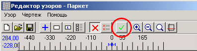
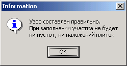
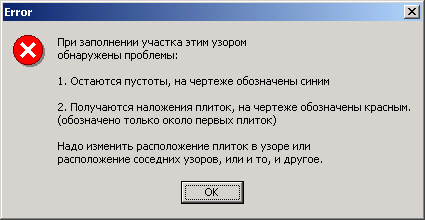
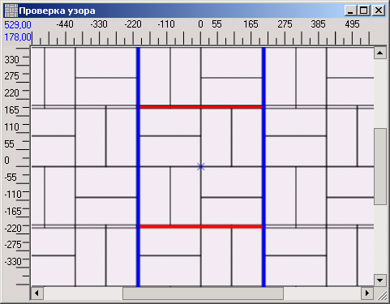

Разработанный узор можно проверить, чтобы при укладке не выяснилось:
·
плитки в узоре налезают друг на друга
·
плитки узоре расположены неплотно, с зазорами
·
соседние фрагменты узора налезают друг на друга
·
соседние фрагменты узора расположены неплотно, с зазорами
Для этого на панели инструментов редактора узоров есть кнопка:

Программа откроет окно с участком 2х2 метра и заполнит его плиткой, контролируя перечисленные в начале этой главы ошибки. Если все правильно, то после заполнения появится сообщение:

Если, например, точки соседних узоров заданы неправильно, то сообщение будет таким:

В окне с участком можно проанализировать ошибки. Пустоты - синие, наложения - красные. Чтобы не загромождать чертеж, наложения выделены только в первом фрагменте узора. Если устранить их в этом фрагменте, они устанятся везде.

Видимо, соседний нижний узор указан выше, чем нужно, а левый - левее.
Нужно закрыть окно, и исправить точки на узоре. После этого можно повторить проверку.